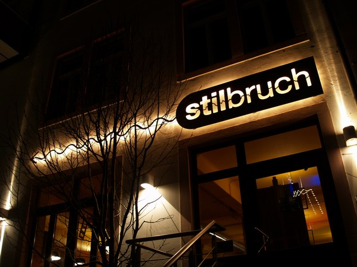

Longdrinktag - Alle Longdrinks nur 2,99 €
21.01.2015 | Stilbruch - Dresdens surreale Kneipe | ab 18:00 Uhr
Habt ihr euch schon mal vorgestellt, wie lang 2,99 € sind? Oder wieviel Hektar ein Longdrinkglas hat? Oder wieviel Strom fließt, wenn man sagt: Macht Watt ihr Volt? Jeden Mittwoch könnt ihr bei uns über solche elementaren Sachen des Lebens bei einem Longdrink für 2,99 € nachdenken. Und dann trinkt ihr noch drei weitere Longdrinks, weil ihr beim ersten noch nicht die Lösung gefunden habt und die außerdem total lecker schmecken.
